Dede Korkut hikâyelerinden resimli, günlük bölümler. Her gün yeni bir bölüm.
Deli Dumrul · 3. Bölüm · 10.10.2026
Deli Dumrul – Can Pazarlığı
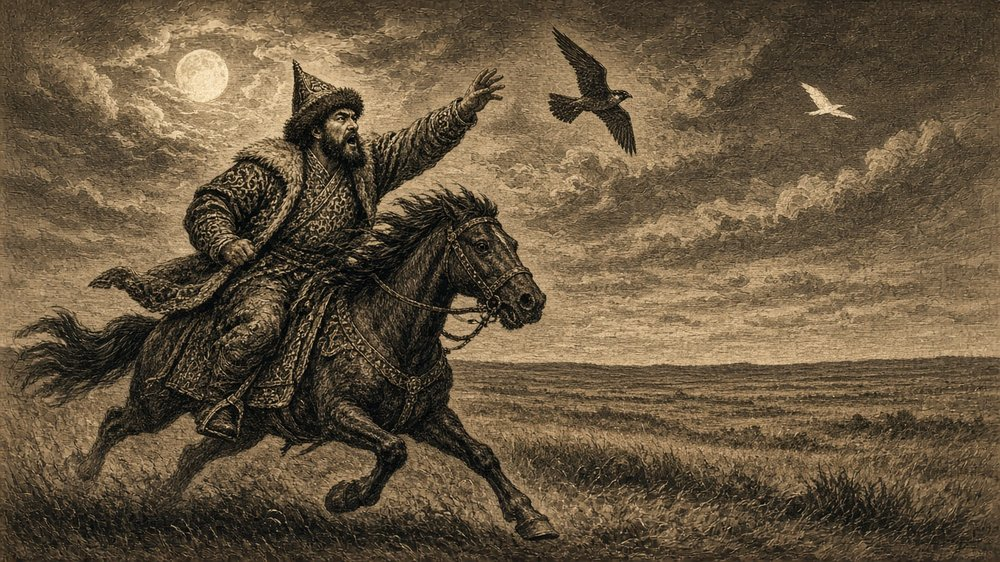
Dumrul şahinini kuşun ardından salar, ama şahin onu yakalayamaz. Kuş gecenin karanlığında gözden kaybolur.
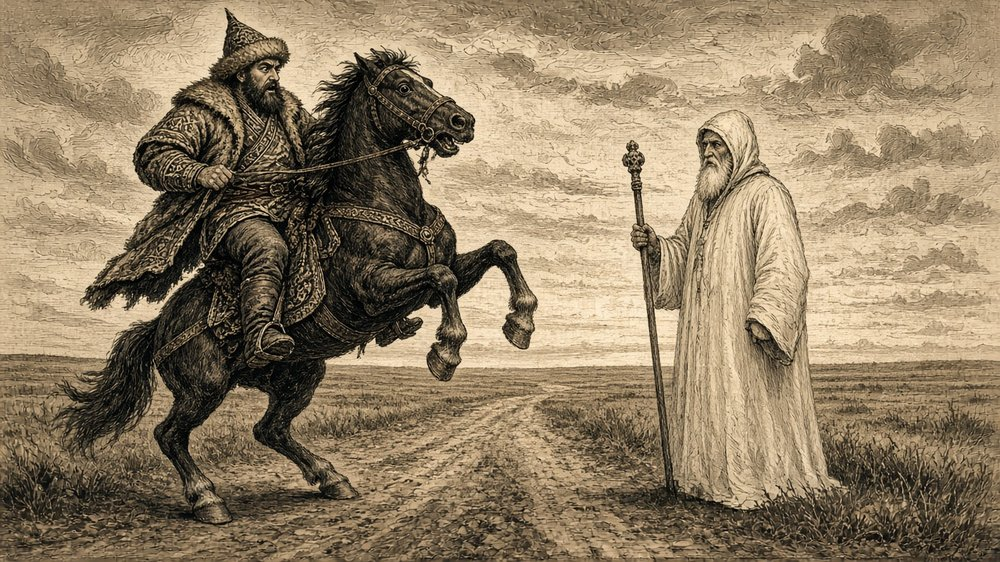
Eli boş dönen Dumrul'un önüne yolda birden Azrail çıkar. Atı ürker, şaha kalkar.
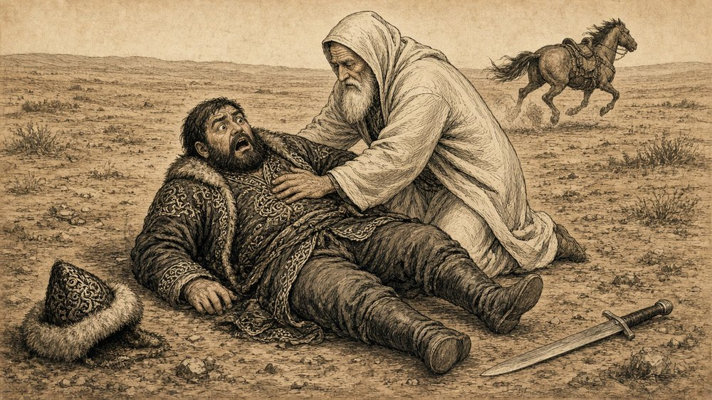
Dumrul atından yere düşer. Azrail göğsüne çöker; Dumrul'un nefesi daralır, kılıcı elinden uzağa düşmüştür.
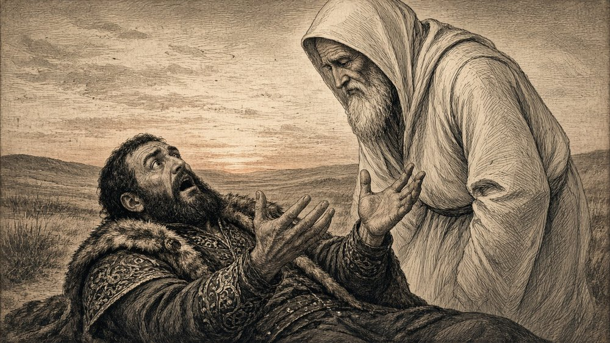
Böbürlenen yiğit gitmiş, korkmuş bir adam kalmıştır. Dumrul yalvarır: "Aman Azrail, seni böyle bilmezdim, canımı alma!"
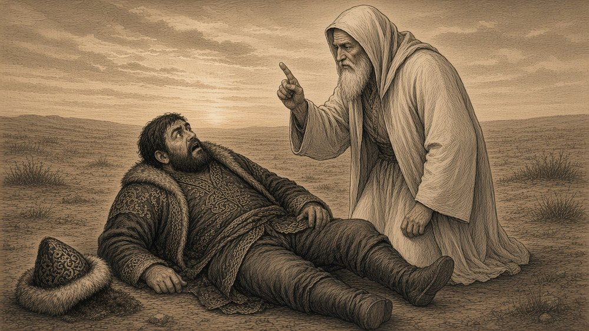
Azrail cevap verir: "Bana ne yalvarırsın? Can veren de alan da Allah'tır, ben yalnızca O'nun bir kuluyum."
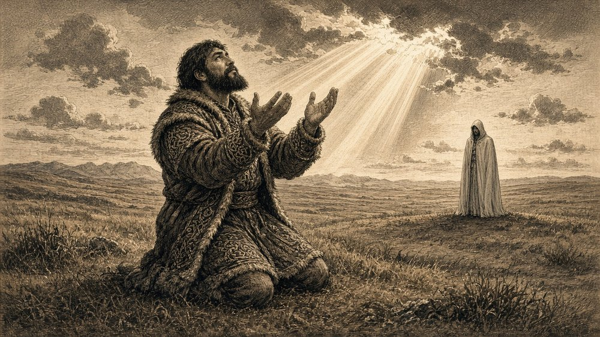
Dumrul dizlerinin üstüne doğrulur: "Öyleyse sen aradan çekil, ben derdimi Allah'a anlatayım." Ellerini göğe açar. (Devamı yarın)
Deli Dumrul · 2. Bölüm · 09.10.2026
Deli Dumrul – Azrail'e Meydan Okuma
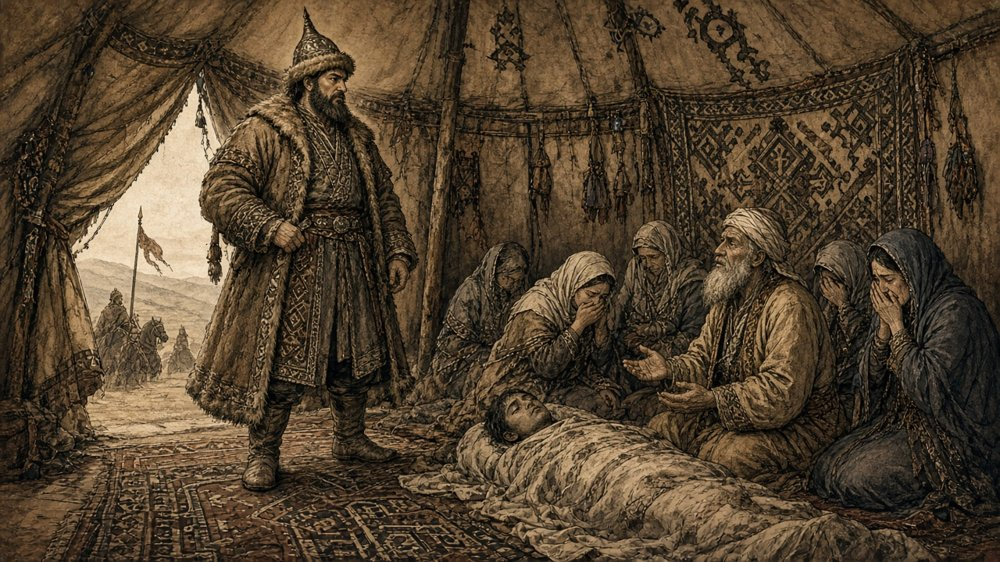
Dumrul yas tutan obaya girip neden ağladıklarını sorar. Bir yiğitlerinin genç yaşta öldüğünü, canını Azrail'in aldığını söylerler.
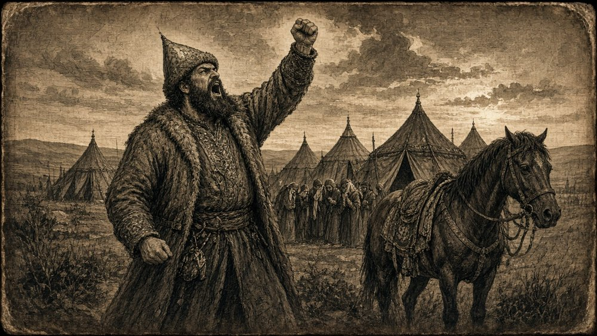
Dumrul öfkelenir: "Azrail kimmiş? Yiğidin canını alan o ise ben de onunla dövüşürüm!" diye göğe meydan okur.
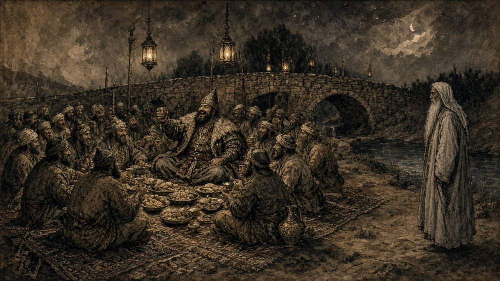
Köprüsüne dönüp kırk yiğidiyle yiyip içerken, kimsenin görmediği ak sakallı bir ihtiyar sessizce yanlarına gelir.
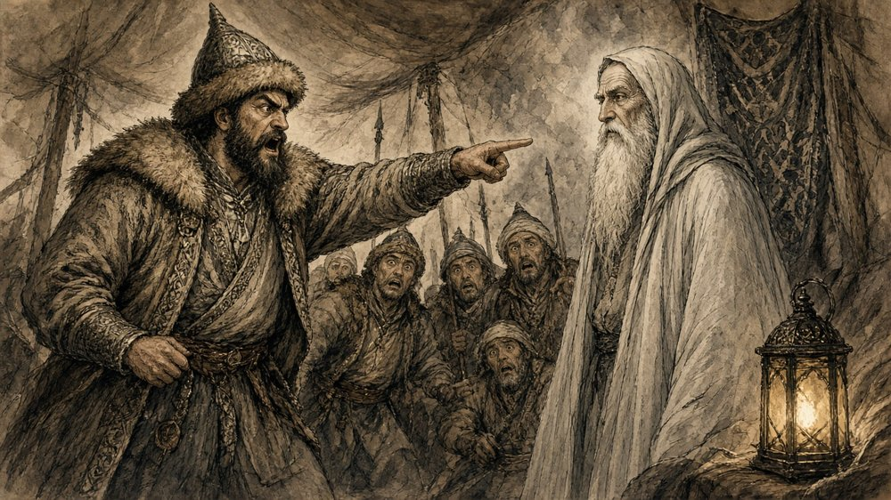
Dumrul kükrer: "Sen kimsin ki izinsiz içeri girdin?" İhtiyar korkmadan cevap verir: "Ben Azrail'im, canını almaya geldim."
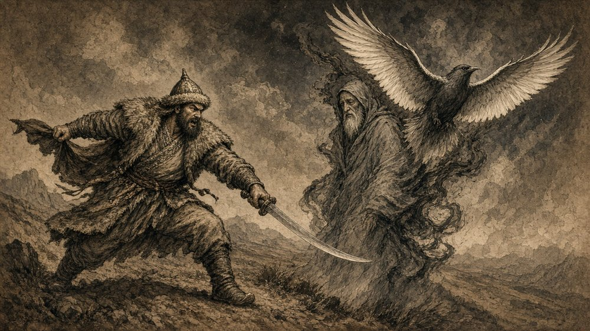
Dumrul kılıcını çekip üstüne atılır, ama Azrail bir kuşa dönüşüp pencereden uçup gider. Kılıç boşluğu keser.
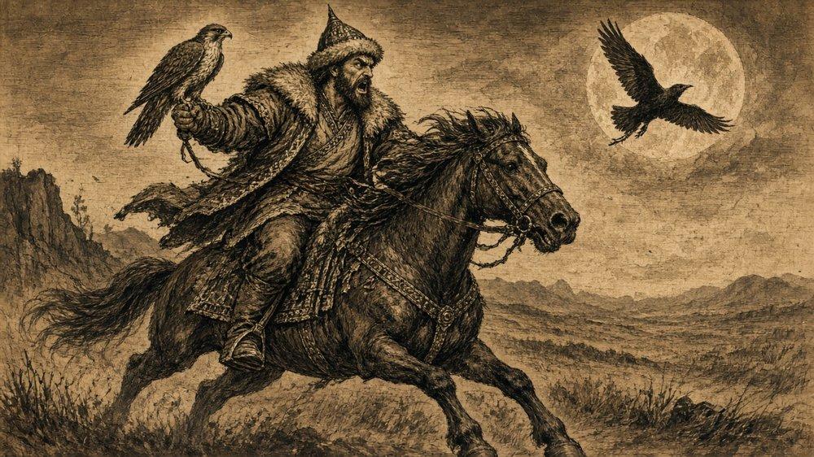
Dumrul atına atlar, şahinini koluna alıp gecenin içinde kuşun peşine düşer. (Devamı yarın)
Deli Dumrul · 1. Bölüm · 04.10.2026
Deli Dumrul – Köprü ve Haraç
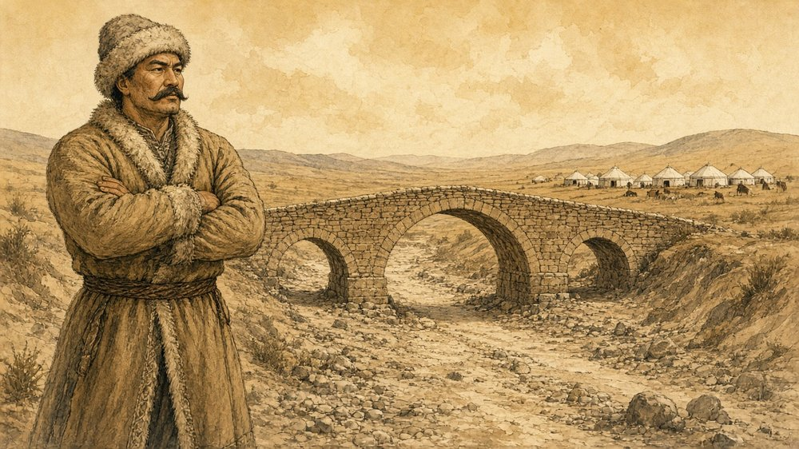
Kuru bir çayın üstüne köprü yaptıran Deli Dumrul, böbürlenerek köprünün başında bekler.Köprüden geçenlerden otuz üç akçe haraç alır; bu paranın hesabını kimse soramaz.Köprüye girmeyip kuru yataktan geçmek isteyenden ise kırk akçe ister ve onu sopayla tehdit eder.
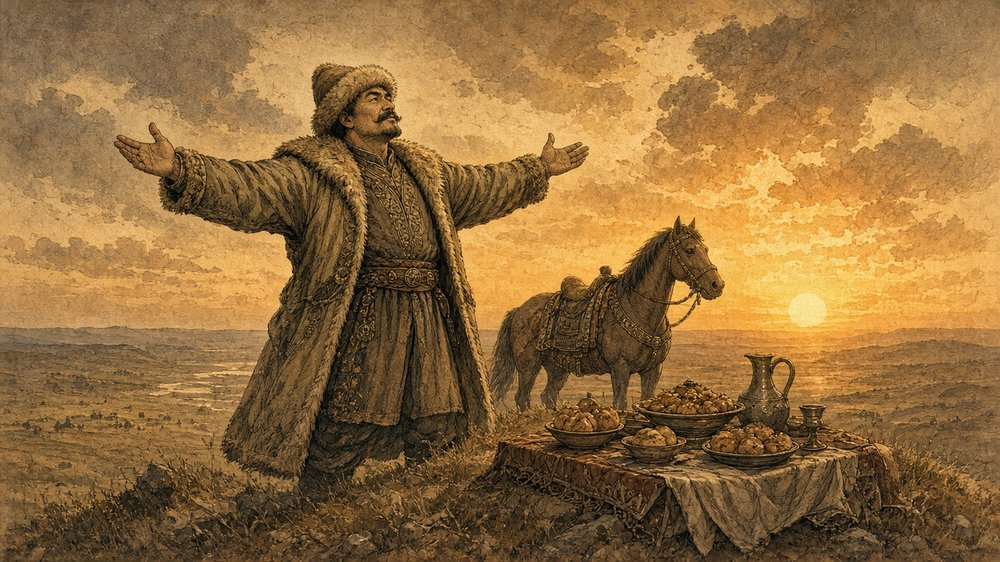
Gün batarken kollarını açar: "Bu dünyada benim gibi bir yiğit daha var mı?"Atına biner. Uzaktaki obadan ağlama sesleri yükselir, kara bir çadırın önünde yas tutulmaktadır.
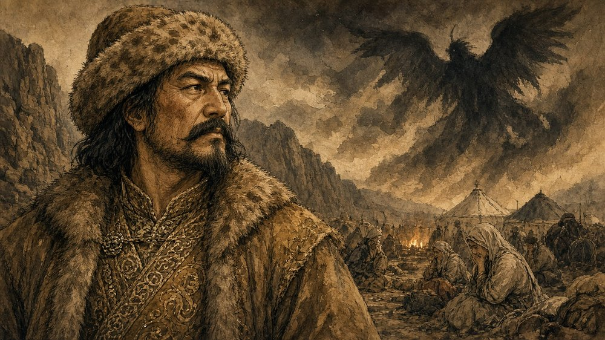
Dumrul durur, düşünür. Gecenin gölgesinde bilmediği bir şey onu izlemektedir. (Devamı yarın)